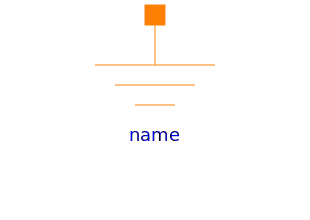

Basic elements of magnetic network models
| Name | Description |
|---|---|
|  Ground | Zero magnetic potential |
| Electro-magnetic energy conversion | |
| Constant reluctance | |
| Leakage reluctance with respect to the reluctance of a useful flux path (not for dynamic simulation of actuators) | |
| For modelling of eddy current in a conductive magnetic flux tube |